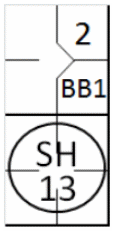
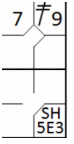
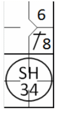
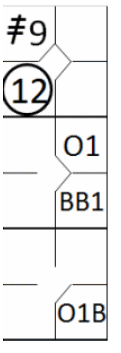
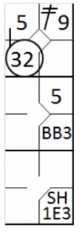

action { batter -> BB }
/* The second batter hits a bunt, is put out by the first baseman assisted by the pitcher, the runner wins the second base */
action { batter -> SH13 , runner1 -> + }

According to rule 9.08 of the OBR:
Score a sacrifice bunt when, before two are out, the batter advances one or more runners with a bunt and is put out at first base, or would have been put out except for a fielding error, unless, in the judgment of the official scorer, the batter was bunting exclusively for a base hit and not sacrificing his own chance of reaching first base for the purpose of advancing a runner or runners, in which case the official scorer shall charge the batter with a time at bat;
Comment: In determining whether the batter had been sacrificing his own chance of reaching first base for the purpose of advancing a runner, the official scorer shall give the batter the benefit of the doubt. The official scorer shall consider the totality of the circumstances of the at-bat, including the inning, the number of outs and the score.
The abbreviation for a sacrifice hit (bunt) is ‘SH’ followed by the number of the fielders who took part in the action. A sacrifice hit (bunt) does not count as a time at bat.
Example 8: the sacrifice hit (bunt) to the pitcher allows the runner to advance to second base.
| WBSC | Translation in the scoring tool | Tool |
|---|---|---|
|
 |
/* The first batter arrives on base on a 'base on ball' */ action { batter -> BB } /* The second batter hits a bunt, is put out by the first baseman assisted by the pitcher, the runner wins the second base */ action { batter -> SH13 , runner1 -> + } |
|
Example 9:
the sacrifice hit (bunt) to third base enables the runner to advance from second to third base. An error by
the first baseman enables the batter-runner to reach first base safely.
As you can see from this example, each advance is noted with the batting order number of the player who made
the sacrifice.
| WBSC | Translation in the scoring tool | Tool |
|---|---|---|
|
 |
/* The first batter hits a double to right field */ action { batter -> 2B9 } /* The second batter hits a bunt toward the third baseman, who retrieves the ball and throws it to the first baseman to get the batter out, but the first baseman fumbles. The second baseman advances. */ action { batter -> SH5E3 , runner2 -> + } |

|
The rules states that, in order to be credited with a sacrifice hit (bunt), one or more runners must advance. Example 10: given here only one runner advanced, but this is enough to make the hit into a sacrifice hit (bunt).
| WBSC | Translation in the scoring tool | Tool |
|---|---|---|

|
/* The first batter hits a triple to right field */ action { batter -> 3B9 } /* The second batter reaches the fist base on a 'base on ball' */ action { batter -> BB } /* The third batter hits a bunt toward the first baseman, who catches the ball and throws it to the second baseman to get the runner out. The runner advances to first base */ action { batter -> SH34 , runner1 -> + } |

|
Very often in a sacrifice situation the first baseman runs forward to recover the ball; in these examples it is usually the pitcher or second baseman who goes to cover first base. The scorer must take great care to record the action as it actually occurred. Example 11: given, the second baseman went to cover first base and received the assist from the first baseman.
| WBSC | Translation in the scoring tool | Tool |
|---|---|---|
|
 |
/* The first batter hits a hit in center field */ action { batter -> 1B8 } /* The batter hits a bunt to the first baseman, who catches the ball and throws it back to the second baseman to get the batter out. The runner advances. */ action { batter -> SH34 , runner1 -> + } |

|
Example 12: A special case of sacrifice hits (bunts) occurs when the defense tries to put out a runner and fails, without committing any errors. In this case the batter who reaches first base must be given a sacrifice and fielder’s choice.
| WBSC | Translation in the scoring tool | Tool |
|---|---|---|

|
/* The first batter reaches the fist base on a 'base on ball' */ action { batter -> BB } /* The batter hits a bunt towards the third baseman who catches the ball and throws it to the second baseman in an unsuccessful attempt to get the runner out*/ action { batter -> SHFC54 , runner1 -> + } |

|
ATTENTION: When, in the scorer’s opinion, neither the batter who hit the sacrifice bunt, nor any of the runners, could have been put out by the defense with ordinary effort, a base hit (bunt) must be scored.
No sacrifice hit (bunt) is awarded if the bunt leads to a runner being put out, even if one or more runners are able to advance.
Example 13:
The bunt is recovered by the pitcher, who puts out the runner going from third to home base, while the runner
on first base reaches second safely.
This is not a sacrifice hit (bunt) and the batter is credited with a time at bat. Add a capital B to show
the bunt.
| WBSC | Translation in the scoring tool | Tool |
|---|---|---|
|
 |
/* The first batter hits a triple to right field */ action { batter -> 3B9 } /* The second batter reaches the fist base on a 'base on ball' */ action { batter -> BB } /* The batter hits a bunt to the pitcher, who recovers the ball and chooses to throw it to the catcher to get out the runner who was on third base.*/ action { batter -> O1b , runner1 -> O1 , runner3 -> 12 } |

|
EXCEPTION: If a runner is put out trying to reach the base after the one he reached on the sacrifice hit (bunt), the batter is also awarded with a sacrifice hit (bunt).
Example 14:
The runner on second base, after reaching third, continues towards home base in an attempt to exploit the error
made on the batter-runner, but he is put out by the catcher with an assist from the first baseman.
NOTE: Sometimes a batter may swing the bat with the intention of making a base hit, but succeeds only
in hitting the ball softly. In this case he must not be awarded a sacrifice hit (bunt), even if one or more runners
advance, as this was not the batter’s intention. The action is recorded as a normal putout on first base.
| WBSC | Translation in the scoring tool | Tool |
|---|---|---|
|
 |
/* The first batter hits a double to right field */ action { batter -> 2B9 } /* The second batter reaches the fist base on a 'base on ball' */ action { batter -> BB } /* The batter hits a bunt to the pitcher, who throws the ball back to the first baseman. The fielder fumbles, and the batter, now a runner, comes in safe. He recovers the ball in time to throw it to the catcher, who puts out the runner coming in from second base.*/ action { batter -> SH1E3 , runner1 -> + , runner3 -> + 32 } |

|